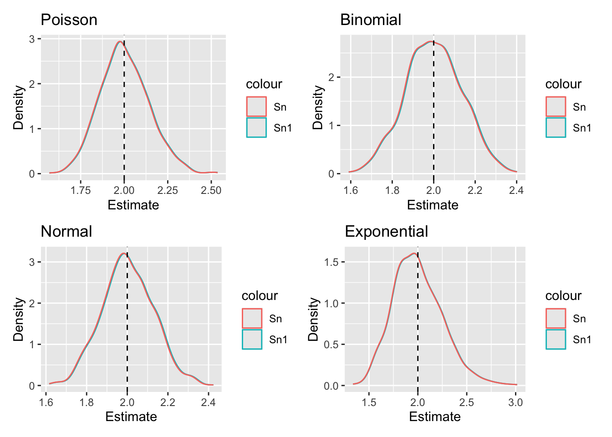
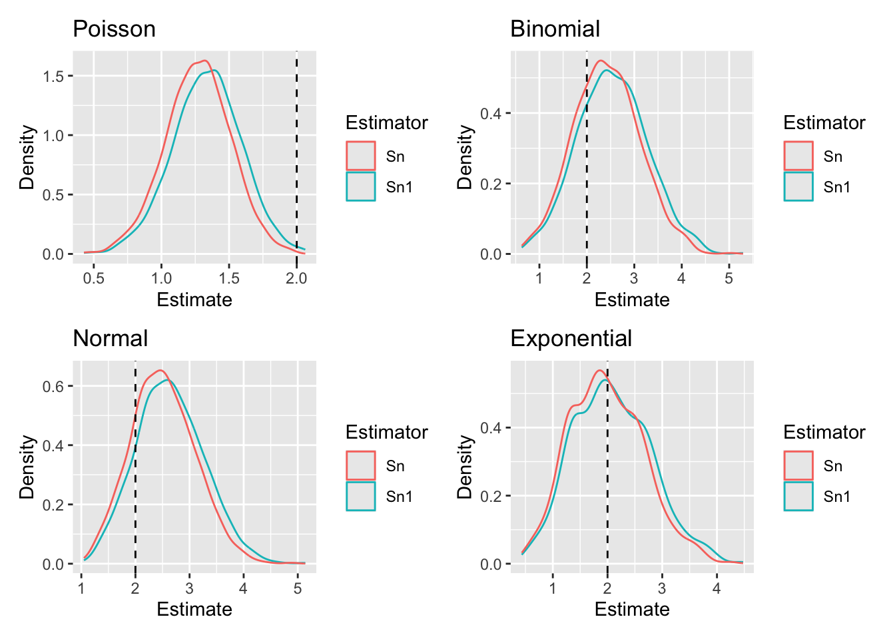

Complete the tasks below. Make sure to start your solutions in on a new line that starts with “Solution:”.
Make sure to use the Quarto Cheatsheet. This will make completing and writing up the lab much easier.
Make sure to use “enter” to make your code readable, so it doesn’t run off the page. I switched the Quarto document to automatically render to .pdf, so you can see what you’re submitting by default. You can switch back for the highlighting by moving the html block above the pdf block in the YAML header.
Don’t forget that you can copy-and-paste code when you’re doing something similar as we did in class!
Make sure to plot all computed probabilities. This is good ggplot practice AND will help make sure you don’t make a mistake when computing the probability.
1 Introduction
When performing point estimation, there isn’t just one right answer. For example, the Method of Moments (MOM) and Maximum Likelihood Estimates (MLEs) aren’t always the same.
One question that comes up, is why we calculate the sample variance as \[S_{n-1}^2 = \frac{1}{n-1} \sum_{i=1}^n (X_i -\bar{X})^2,\] when it is supposed to be the ``average squared distance from the mean, i.e., \[S_n^2 = \frac{1}{n} \sum_{i=1}^n (X_i -\bar{X})^2.\]
2 Comparing Estimators
2.1 Initial Simulation
In this lab, we will explore why we use \(S_{n-1}^2\) and not \(S_n^2\). To do this, we will generate data from four known distributions:
Create a plot or combination of plots (using patchwork) to show the results across all four distributions. Make sure to create a corresponding table that numerically summarizes the results of the simulation. You should include \[\begin{align*}
\textrm{Bias} &= \textrm{Average of Estimates} - \textrm{True Value}\\
\textrm{Precision} &= \frac{1}{\textrm{Variance of Estimates}}\\
\textrm{Mean Square Error} &= \textrm{Bias}^2 + \textrm{Variance of Estimates}.
\end{align*}\]
Solution
Code
p1 =ggplot(results) +geom_density(aes(x = Sn1pois, color ="Sn1")) +geom_density(aes(x = Snpois, color ="Sn")) +geom_vline(xintercept =2, linetype ="dashed") +labs(title ="Poisson", x ="Estimate", y ="Density", fill ="Estimator")p2 =ggplot(results) +geom_density(aes(x = Sn1binom, color ="Sn1")) +geom_density(aes(x = Snbinom, color ="Sn")) +geom_vline(xintercept =2, linetype ="dashed") +labs(title ="Binomial", x ="Estimate", y ="Density", fill ="Estimator")p3 =ggplot(results) +geom_density(aes(x = Sn1norm, color ="Sn1")) +geom_density(aes(x = Snnorm, color ="Sn")) +geom_vline(xintercept =2, linetype ="dashed") +labs(title ="Normal", x ="Estimate", y ="Density", fill ="Estimator")p4 =ggplot(results) +geom_density(aes(x = Sn1exp, color ="Sn1")) +geom_density(aes(x = Snexp, color ="Sn")) +geom_vline(xintercept =2, linetype ="dashed") +labs(title ="Exponential", x ="Estimate", y ="Density", fill ="Estimator")(p1 + p2) / (p3 + p4)
Comparison
2.2 Simulation over various sample sizes
Consider the effect of the sample size have on these results. Provide a graphical and numerical summary of what happens as \(n\) increases – say \(n=20\), \(n=50\), \(n=100\), and \(n=500\). Does the result in your initial simulation hold across samples? Or, do things change as the sample size changes? Ensure to set your randomization seed.
p1 =ggplot(results) +geom_density(aes(x = Sn1pois, color ="Sn1")) +geom_density(aes(x = Snpois, color ="Sn")) +geom_vline(xintercept =2, linetype ="dashed") +labs(title ="Poisson", x ="Estimate", y ="Density", fill ="Estimator")p2 =ggplot(results) +geom_density(aes(x = Sn1binom, color ="Sn1")) +geom_density(aes(x = Snbinom, color ="Sn")) +geom_vline(xintercept =2, linetype ="dashed") +labs(title ="Binomial", x ="Estimate", y ="Density", fill ="Estimator")p3 =ggplot(results) +geom_density(aes(x = Sn1norm, color ="Sn1")) +geom_density(aes(x = Snnorm, color ="Sn")) +geom_vline(xintercept =2, linetype ="dashed") +labs(title ="Normal", x ="Estimate", y ="Density", fill ="Estimator")p4 =ggplot(results) +geom_density(aes(x = Sn1exp, color ="Sn1")) +geom_density(aes(x = Snexp, color ="Sn")) +geom_vline(xintercept =2, linetype ="dashed") +labs(title ="Exponential", x ="Estimate", y ="Density", fill ="Estimator")(p1 + p2) / (p3 + p4)
p1 =ggplot(results) +geom_density(aes(x = Sn1pois, color ="Sn1")) +geom_density(aes(x = Snpois, color ="Sn")) +geom_vline(xintercept =2, linetype ="dashed") +labs(title ="Poisson", x ="Estimate", y ="Density", fill ="Estimator")p2 =ggplot(results) +geom_density(aes(x = Sn1binom, color ="Sn1")) +geom_density(aes(x = Snbinom, color ="Sn")) +geom_vline(xintercept =2, linetype ="dashed") +labs(title ="Binomial", x ="Estimate", y ="Density", fill ="Estimator")p3 =ggplot(results) +geom_density(aes(x = Sn1norm, color ="Sn1")) +geom_density(aes(x = Snnorm, color ="Sn")) +geom_vline(xintercept =2, linetype ="dashed") +labs(title ="Normal", x ="Estimate", y ="Density", fill ="Estimator")p4 =ggplot(results) +geom_density(aes(x = Sn1exp, color ="Sn1")) +geom_density(aes(x = Snexp, color ="Sn")) +geom_vline(xintercept =2, linetype ="dashed") +labs(title ="Exponential", x ="Estimate", y ="Density", fill ="Estimator")(p1 + p2) / (p3 + p4)
p1 =ggplot(results) +geom_density(aes(x = Sn1pois, color ="Sn1")) +geom_density(aes(x = Snpois, color ="Sn")) +geom_vline(xintercept =2, linetype ="dashed") +labs(title ="Poisson", x ="Estimate", y ="Density", fill ="Estimator")p2 =ggplot(results) +geom_density(aes(x = Sn1binom, color ="Sn1")) +geom_density(aes(x = Snbinom, color ="Sn")) +geom_vline(xintercept =2, linetype ="dashed") +labs(title ="Binomial", x ="Estimate", y ="Density", fill ="Estimator")p3 =ggplot(results) +geom_density(aes(x = Sn1norm, color ="Sn1")) +geom_density(aes(x = Snnorm, color ="Sn")) +geom_vline(xintercept =2, linetype ="dashed") +labs(title ="Normal", x ="Estimate", y ="Density", fill ="Estimator")p4 =ggplot(results) +geom_density(aes(x = Sn1exp, color ="Sn1")) +geom_density(aes(x = Snexp, color ="Sn")) +geom_vline(xintercept =2, linetype ="dashed") +labs(title ="Exponential", x ="Estimate", y ="Density", fill ="Estimator")(p1 + p2) / (p3 + p4)
p1 =ggplot(results) +geom_density(aes(x = Sn1pois, color ="Sn1")) +geom_density(aes(x = Snpois, color ="Sn")) +geom_vline(xintercept =2, linetype ="dashed") +labs(title ="Poisson", x ="Estimate", y ="Density", fill ="Estimator")p2 =ggplot(results) +geom_density(aes(x = Sn1binom, color ="Sn1")) +geom_density(aes(x = Snbinom, color ="Sn")) +geom_vline(xintercept =2, linetype ="dashed") +labs(title ="Binomial", x ="Estimate", y ="Density", fill ="Estimator")p3 =ggplot(results) +geom_density(aes(x = Sn1norm, color ="Sn1")) +geom_density(aes(x = Snnorm, color ="Sn")) +geom_vline(xintercept =2, linetype ="dashed") +labs(title ="Normal", x ="Estimate", y ="Density", fill ="Estimator")p4 =ggplot(results) +geom_density(aes(x = Sn1exp, color ="Sn1")) +geom_density(aes(x = Snexp, color ="Sn")) +geom_vline(xintercept =2, linetype ="dashed") +labs(title ="Exponential", x ="Estimate", y ="Density", fill ="Estimator")(p1 + p2) / (p3 + p4)
n = 500 graphs

As n increases from 20 to 500, the bias of Sn-1 stays close to 0 across all four distributions, while the bias of Sn is consistently negative but larger than Sn-1(except at n=500). For example, in the Poisson case the bias of Sn goes from -0.1729 at n=20 down to 0.0010 at n=500. Both estimators become more precise and have lower MSE as n increases. Both are nearly identical across all four distributions, since n-1/n = 499/500 which is approximately 1. So yes, the result from the initial simulation holds that Sn-1 is better than Sn.
2.3 Simulation
You have written code to draw a random sample of various sizes from each distribution, and to calculate and store the calculated estimates. Rework your code to produce a density plot of the \(s_{n-1}^2\) and \(s_{n}^2\). Do you have a guess about their distribution? Ensure to set your randomization seed.
Solution I had done density plots thoughout, here is the comments on those plots. The distributions are right-skewed at small n, but become more symmetric and bell-shaped as n increases. The graphs begin looking approximately normal for large degrees of freedom. This is similar to a chi-squared distribution.
2.4 Bootstrap
Now, take one sample from each distribution. Instead of drawing a random sample at each iteration, sample with replacement from the one sample. Produce a density plot of the \(s_{n-1}^2\) and \(s_{n}^2\). Do we get roughly the same information as we do in the full simulation? Try this over several seeds – what do you notice? Ensure to set your randomization seed.
p1 =ggplot(boot_results) +geom_density(aes(x = Sn1pois, color ="Sn1")) +geom_density(aes(x = Snpois, color ="Sn")) +geom_vline(xintercept =2, linetype ="dashed") +labs(title ="Poisson", x ="Estimate", y ="Density", color ="Estimator")p2 =ggplot(boot_results) +geom_density(aes(x = Sn1binom, color ="Sn1")) +geom_density(aes(x = Snbinom, color ="Sn")) +geom_vline(xintercept =2, linetype ="dashed") +labs(title ="Binomial", x ="Estimate", y ="Density", color ="Estimator")p3 =ggplot(boot_results) +geom_density(aes(x = Sn1norm, color ="Sn1")) +geom_density(aes(x = Snnorm, color ="Sn")) +geom_vline(xintercept =2, linetype ="dashed") +labs(title ="Normal", x ="Estimate", y ="Density", color ="Estimator")p4 =ggplot(boot_results) +geom_density(aes(x = Sn1exp, color ="Sn1")) +geom_density(aes(x = Snexp, color ="Sn")) +geom_vline(xintercept =2, linetype ="dashed") +labs(title ="Exponential", x ="Estimate", y ="Density", color ="Estimator")(p1 + p2) / (p3 + p4)
Bootstrapping graphs

Trying this over several seeds, I notice that the bootstrap distributions are always centered around the sample variance of the original sample rather than the true variance of 2. When the original sample happens to have a variance close to 2, the bootstrap looks very similar to the full simulation. When the original sample has a variance far from 2, the bootstrap center shifts noticeably away from 2.
3 Executive Summary
Summarize the work you’ve done here to provide a brief (200-300 word) summary of the simulation and the results using your work in Lab 11. Your summary should be professional, clear, and all claims should be corroborated with statistical support.
Solution This simulation study compared two estimators of population variance, Sn-1 Sn, across four distributions — Poisson(λ=2), Binomial(n=50, p=5−root21 / 10), Normal(μ=0, σ=2), and Exponential(λ=1/root2), all with a true variance of 2. At n=20 Sn−1 was approximately unbiased across all four distributions, while Sn was consistently negatively biased. For example, in the Poisson graphs the bias of Sn was -0.1729 compared to -0.0767 for Sn−1. As n increased to 50, 100, and 500, both estimators converged toward the true variance of 2 and became nearly indistinguishable, since 499/500 is basically 1. The density plots suggest both estimators follow a chi-squared distribution: right-skewed at small n but becoming approximately normal as n grows. Finally, the bootstrap analysis showed that resampling with replacement from a single sample captures a similar shape to the full simulation, but the center of the bootstrap distribution depends on the original sample drawn rather than the true variance of 2, shifting noticeably across different seeds.